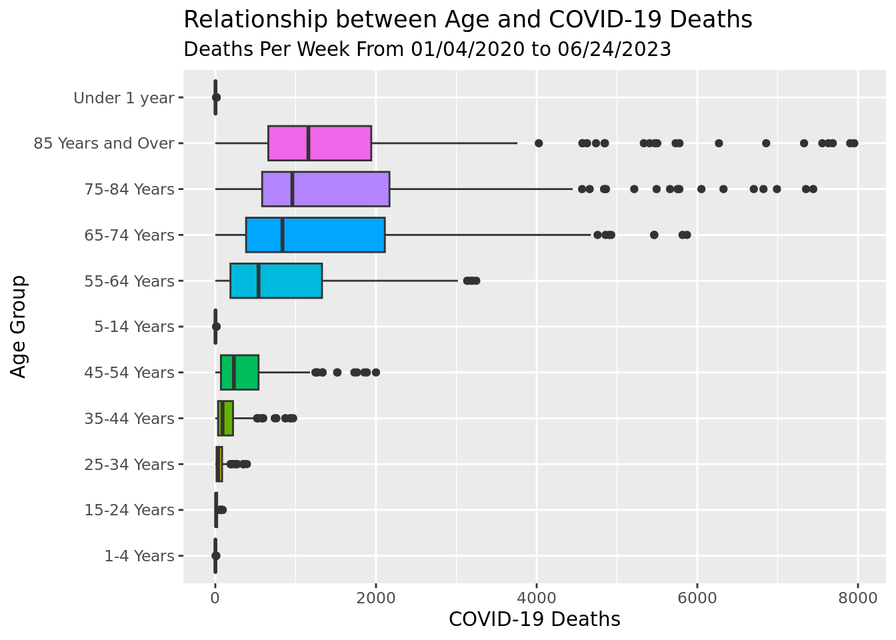
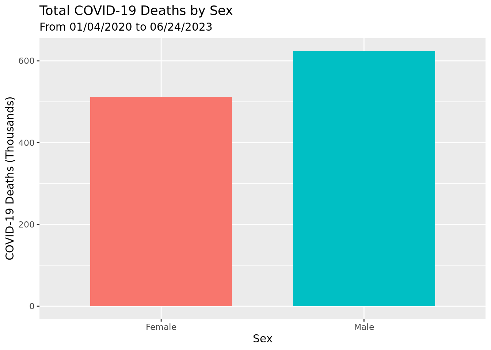

Rows: 6552 Columns: 8
── Column specification ────────────────────────────────────────────────────────
Delimiter: ","
chr (5): Data as of, State, End Week, Sex, Age Group
dbl (3): MMWR Week, Total Deaths, COVID-19 Deaths
ℹ Use `spec()` to retrieve the full column specification for this data.
ℹ Specify the column types or set `show_col_types = FALSE` to quiet this message.Covid-19 Report
Report
Introduction and data
The global outbreak of COVID-19 has created a need for comprehensive data to understand the impact that the virus held. This research seeks to uncover the patterns of Covid-19 related mortality in the United States in correlation with demographic factors, specifically age and gender. We decided to delve deeper into specifically age and gender due to historical trends related to mortality rates on previous infectious diseases. For example, the National Library of medicine points to the Spanish Flu of 1918 in which an interesting W shape emerged in regards to mortality rates. Expectingly, older individuals with lower immunity systems had a higher mortality rate than the average at around 0.5%. However, surprisingly the highest mortality rates actually were held by the young adult demographic around 1%, doubling the older generation. This interesting pattern motivated us to delve deeper into age for Covid-19 deaths as well. The Library also mentions that gender is another factor often studied as many viruses appear to interact with different genders’ bodies differently. This concept also motivated our group to delve deeper into understanding if gender played a significant role in the mortality rates for COVID-19.
Our data is sourced from the CDC’s National Center for Health Statistics (NCHS, 2023). The data was collected and updated every week and covers information within all 50 states of the USA and the District of Columbia. The data counts the number of COVID-19 deaths are based on data stored in the National Vital Statistic System. These observations are then added every week. Each Observation of the dataset represents the count of Covid-19 death in a given week, state, specific age group, and sex. So for every single week, there will be an observation for every combination of every subgroup (state, age, group, and sex). The data is sourced from the CDC’s National Center for Health Statistics (NCHS, 2023). Our research question is: What is the relationship between age groups and COVID-19 mortality rates in the United States over time, and how have these rates evolved from the start of the pandemic until June 28, 2023? This research question allows us to see how Covid-19 mortality rates have changed over time among different age groups which helps us better understand the dynamic of the virus and how the pandemic potentially evolve. The research topic will be to observe trends in COVID-19 deaths given different geographic groups and how these trends evolve over time. We believe that older age groups will have higher mortality rate compared to the rest of the demographic. We also hypothesize that the mortality rates for women will be greater than those for men. The types of variables in my research question include both Categorical and quantitative. Age in this context would be categorical because we are grouping age together and looking at specific age groups. The number of deaths in each observation is Quantitative. Sex and date are all categorical.
Given the nature of health data, it is essential to acknowledge and address potential ethical considerations. The data used in this dataset is anonymized and aggregate, which adheres to the highest standard of privacy. This allows the overarching goal of valuable significant insights while respecting the confidentiality of individuals involved in the dataset.
Literature Review
In the paper, “Role of Sex and Age in Fatal Outcomes of COVID-19: Women and Older Centenarians Are More Resilient,” Caruso et al. analyzes the role of age and sex in the fatal outcome of COVID-19, addressing three questions: (1) whether women have been more resilient than men to the virus, (2) whether centenarians have a lower mortality rate than other older people, and (3) if older centenarians born before 1919 are more resistant to SARS-CoV-2 compared to younger centenarians. The research finds that women are generally more resilient to COVID-19 compared to men, and even stated that men have found to have twice the mortality rate compared to women. The paper found that centenarians didn’t necessarily have lower mortality rate compared to the rest of the population. Finally paper also found that Centenarians who were born before 1919 seemed more resilient compared to other centenarians. Our research question builds on to this article by also analyzing the varibility of mortality rates given different sexes, but by also looking at how these mortality rates vary across different age groups alongside different sexes. Our reserach question will add another layer to the article by analyzing specific age groups of different sexes rather than just looking at the general different genders. (Caruso et al. 2023)
Methodology
In order to explore the effects of age and sex with regards to Covid-19 mortality rates, we first conducted exploratory data analysis to help us visualize and better understand our data. In our analysis, we decided to specifically analyze the variables End Week, Sex, Age Group, and COVID-19 Deaths as these variables are directly related to our research question and objectives. We then cleaned and modified the data to help us better fit our models. We then calculated p-value to test our hypothesis that males and females have different mortality rates and that older people have higher mortality compared to younger people. Next, we employed a linear regression models to assess the impact of sex and gender on COVID-19 mortality rates. To further refine our analysis, we created a new dataset excluding the “All Sex” and “All Age” categories, enabling us to consider both age and sex as predictors without redundancy. Using this dataset, we applied the Akaike Information Criterion (AIC) model selection method to see which predictors would be useful in the model.
Data Manipulation
# A tibble: 2,002 × 8
`Data as of` State `MMWR Week` `End Week` Sex `Age Group` `Total Deaths`
<chr> <chr> <dbl> <chr> <chr> <chr> <dbl>
1 06/28/2023 United … 1 01/04/2020 All … Under 1 ye… 403
2 06/28/2023 United … 1 01/04/2020 All … 1-4 Years 79
3 06/28/2023 United … 1 01/04/2020 All … 5-14 Years 99
4 06/28/2023 United … 1 01/04/2020 All … 15-24 Years 605
5 06/28/2023 United … 1 01/04/2020 All … 25-34 Years 1261
6 06/28/2023 United … 1 01/04/2020 All … 35-44 Years 1771
7 06/28/2023 United … 1 01/04/2020 All … 45-54 Years 3284
8 06/28/2023 United … 1 01/04/2020 All … 55-64 Years 7936
9 06/28/2023 United … 1 01/04/2020 All … 65-74 Years 11789
10 06/28/2023 United … 1 01/04/2020 All … 75-84 Years 14546
# ℹ 1,992 more rows
# ℹ 1 more variable: `COVID-19 Deaths` <dbl>Because the dataset contains all possible combinations of sex and age groups given a specific end week, we decided make two sub Datasets to allow us to separately analyze ages and sex.
covidData_Ages drops all observations with “All Ages,” which includes all ages in each observation, which would not allow us to visualize the relationship between COVID-19 deaths and specific age groups. Furthermore, we filtered the dataset to only include the Sex of “All Sex” because it already includes both the female and male data(Female data + male data = All Set Data). If we included the separate female and male observations, then the data would overlap.
covidData_sex drops all observations with “All Sex,” which includes all sexes in each obersvation, which again, wouldn’t allow us to visualize relationships between deaths and specific sexes. Then, we also filtered the dataset to include only “All Ages” observations it already includes all age groups. If we included the all the separate age group observations alongside “All ages”, then the data would overlap.
EDA
After Data Manipulation, we were able to graph our box plot visualization of the COVID-19 Deaths and each age group.
BoxPlot comparing mortality rates across age groups

From our visualization, we can conclude that that the median of COVID-19 Deaths of those 85 years and over is the highest. This trend stays mostly consistent throughout: as the age group increases, the median number of COVID-19 Deaths increase.
We also created a bar plot to compare difference between total COVID-19 related deaths between women and men with the changed dataset.
Bar Plot comparing women and men mortality

The barplot showing the relationship between total deaths of males compared to females illustrates a higher number of deaths among males.
Graphs regarding trends over time

The line plot showing the relationship between Covid-19 deaths of males compared to females illustrates consistently higher number of deaths among males over time.

The line plot showing the relationship between covid-19 deaths of age groups illustrates consistently higher number of deaths among older age groups.
Model Selection
We selected linear regression as our statistical model. This is because our response variable is a numerical value. Specifically, our goal was to use the model to understand how age and sex are associated with the number of COVID-19 deaths. Linear regression is good for our goal because it allows us to quantify the association between these categorical explanatory variables and our continuous outcome variable.
Model Construction: We first constructed separate linear regression models for each explanatory variable – one for age groups and one for sex. This allowed us to isolate the impact of each factor on COVID-19 mortality rates.
[1] "R squared value of sex model: 0.00992005002448675"[1] "R squared value of age group model: 0.356314693625223"Sex Model (R² = 0.0099):
- This R² value suggests that approximately 0.99% of the variability in COVID-19 death counts can be explained by the sex of the individuals.
- A low R² like this indicates that sex alone does not strongly predict the number of COVID-19 deaths. This means that while there may be some difference in COVID-19 deaths between males and females, sex is not a major determinant in the variability of death counts.
- This finding implies that other factors, not included in this model, play a more significant role in determining COVID-19 mortality rates.
Age Group Model (R² = 0.356):
An R² value of 35.6% means that about 35.6% of the variation in COVID-19 deaths can be explained by the age group variable.
This is a more substantial proportion compared to the sex model, meaning that age group is a more significant predictor of COVID-19 deaths than sex.
The higher R² value here indicates that as one moves across different age groups, the variation in COVID-19 death counts changes more noticeably than it does between different sexes.
However, an R² of 0.356 also means that a significant portion of the variability (around 64.4%) is still unexplained by the age group variable alone.
We then utilize an AIC model to determine whether using both variables (age and sex) in conjunction with each other is more effective in predicting COVID-19 mortality rates than using them independently.
First a new dataset is created to remove all the rows with “All Sex” and “All Age” groups. This way, we can introduce the AIC model to analyze both of the variables as predictors, which wouldn’t be accurate if we kept the “All Sex” and “All Age” groups.
# A tibble: 4,004 × 8
`Data as of` State `MMWR Week` `End Week` Sex `Age Group` `Total Deaths`
<chr> <chr> <dbl> <chr> <chr> <chr> <dbl>
1 06/28/2023 United … 1 01/04/2020 Male Under 1 ye… 214
2 06/28/2023 United … 1 01/04/2020 Male 1-4 Years 42
3 06/28/2023 United … 1 01/04/2020 Male 5-14 Years 51
4 06/28/2023 United … 1 01/04/2020 Male 15-24 Years 445
5 06/28/2023 United … 1 01/04/2020 Male 25-34 Years 888
6 06/28/2023 United … 1 01/04/2020 Male 35-44 Years 1127
7 06/28/2023 United … 1 01/04/2020 Male 45-54 Years 2020
8 06/28/2023 United … 1 01/04/2020 Male 55-64 Years 4801
9 06/28/2023 United … 1 01/04/2020 Male 65-74 Years 6736
10 06/28/2023 United … 1 01/04/2020 Male 75-84 Years 7451
# ℹ 3,994 more rows
# ℹ 1 more variable: `COVID-19 Deaths` <dbl>[1] "AIC value of additive model: 60474.2465786514"[1] "AIC value of interaction model: 60423.7870450313"Since the AIC of the interaction model is lower, it indicates that there is an interaction between Age Group and Sex that is important in predicting COVID-19 deaths.
Now, we will compare AIC scores using an interaction model to determine whether using both variables (age and sex) in conjunction with each other provides a more effective model for predicting COVID-19 mortality rates than using them independently. We will use the Step AIC to help us evaluate whether adding an interaction term between age and sex improves the model compared to a simpler additive model that only considers the main effects of age and sex.
Start: AIC=49122.25
`COVID-19 Deaths` ~ `Age Group`
Df Sum of Sq RSS AIC
+ Sex 1 3139920 844399899 49109
<none> 847539819 49122
Step: AIC=49109.39
`COVID-19 Deaths` ~ `Age Group` + Sex
Df Sum of Sq RSS AIC
+ `Age Group`:Sex 10 14729170 829670729 49059
<none> 844399899 49109
Step: AIC=49058.93
`COVID-19 Deaths` ~ `Age Group` + Sex + `Age Group`:Sex
Call:
lm(formula = `COVID-19 Deaths` ~ `Age Group` + Sex + `Age Group`:Sex,
data = newAgeSex)
Coefficients:
(Intercept) `Age Group`15-24 Years
0.70330 5.98352
`Age Group`25-34 Years `Age Group`35-44 Years
25.41758 62.17033
`Age Group`45-54 Years `Age Group`5-14 Years
141.42308 0.63187
`Age Group`55-64 Years `Age Group`65-74 Years
337.03297 570.49451
`Age Group`75-84 Years `Age Group`85 Years and Over
717.50549 944.03297
`Age Group`Under 1 year SexMale
0.55495 0.09890
`Age Group`15-24 Years:SexMale `Age Group`25-34 Years:SexMale
3.02198 15.27473
`Age Group`35-44 Years:SexMale `Age Group`45-54 Years:SexMale
38.73626 106.48901
`Age Group`5-14 Years:SexMale `Age Group`55-64 Years:SexMale
-0.02747 197.43956
`Age Group`65-74 Years:SexMale `Age Group`75-84 Years:SexMale
258.33516 194.54945
`Age Group`85 Years and Over:SexMale `Age Group`Under 1 year:SexMale
-198.97253 0.14286 [1] "Adjusted R-squared for Sex model: 0.00718502253836661"[1] "Adjusted R-squared for Age Group model: 0.353081718706214"[1] "Adjusted R-squared for Age Group and Sex Interaction model: 0.354517007785536"Because the AIC is lower for models with the two predictors ‘Age Group’ and ‘Sex’, compared to the model with only the ‘Age Group’ model, then the model with both predictors is better-fitting because AIC rewards models that provide a good fit to the data.
Moreover, when comparing adjusted R-Squared values, the interaction model offers a slight improvement over the Age Group model alone. This suggests that considering both age and sex, along with their interaction, provides a more comprehensive understanding of the factors influencing COVID-19 mortality rates.
# A tibble: 22 × 5
term estimate std.error statistic p.value
<chr> <dbl> <dbl> <dbl> <dbl>
1 (Intercept) 0.703 33.8 0.0208 9.83e- 1
2 `Age Group`15-24 Years 5.98 47.8 0.125 9.00e- 1
3 `Age Group`25-34 Years 25.4 47.8 0.531 5.95e- 1
4 `Age Group`35-44 Years 62.2 47.8 1.30 1.94e- 1
5 `Age Group`45-54 Years 141. 47.8 2.96 3.14e- 3
6 `Age Group`5-14 Years 0.632 47.8 0.0132 9.89e- 1
7 `Age Group`55-64 Years 337. 47.8 7.04 2.20e-12
8 `Age Group`65-74 Years 570. 47.8 11.9 3.17e-32
9 `Age Group`75-84 Years 718. 47.8 15.0 1.74e-49
10 `Age Group`85 Years and Over 944. 47.8 19.7 9.66e-83
# ℹ 12 more rowsTable of coefficients for easier visualization:
| Term | Coefficient | Term | Coefficient |
|---|---|---|---|
| Intercept | 0.70330 | Age Group 55-64 Years | 337.03297 |
| Age Group 15-24 Years | 5.98352 | Age Group 65-74 Years | 570.49451 |
| Age Group 25-34 Years | 25.41758 | Age Group 75-84 Years | 717.50549 |
| Age Group 35-44 Years | 62.17033 | Age Group 85 Years and Over | 944.03297 |
| Age Group 45-54 Years | 141.42308 | Age Group Under 1 year | 0.55495 |
| Age Group 5-14 Years | 0.63187 | Sex Male | 0.09890 |
| Age Group 15-24 Years:Sex Male | 3.02198 | Age Group 35-44 Years:Sex Male | 38.73626 |
| Age Group 25-34 Years:Sex Male | 15.27473 | Age Group 45-54 Years:Sex Male | 106.48901 |
| Age Group 5-14 Years:Sex Male | -0.02747 | Age Group 55-64 Years:Sex Male | 197.43956 |
| Age Group 65-74 Years:Sex Male | 258.33516 | Age Group 75-84 Years:Sex Male | 194.54945 |
| Age Group 85 Years and Over:Sex Male | -198.97253 | Age Group Under 1 year:Sex Male | 0.14286 |
Interpreting the coefficients:
Coefficients for older age groups are generally larger positive values which suggest an increase in COVID-19 deaths as age increases.
The small coefficient for
SexMalesuggests a small increase in deaths for males over females when not considering age groups.Interaction coefficients shows how the effect of being male differs across age groups. For example, middle-aged groups (35-44, 45-54, etc.) show a significant increase in COVID-19 deaths for males, whereas the oldest group (85 and over) shows a decrease.
The negative coefficient for the oldest age group’s interaction term could be interpreted as indicating that the difference in COVID-19 deaths between sexes becomes less pronounced or even reversed in the very old age groups.
In essence, the model indicates that there is a significant interaction between Age Group and Sex. This means that the effect of Age Group on COVID-19 deaths is different for males and females, and thus it’s important to consider these variables together rather than separately. The lower AIC for the model including the interaction suggests it is a better fit for the data than the models without the interaction.
Results
In our analysis regarding Covid-19, the major leading purpose was to determine the greatest factors that went into mortality rate. To do so, we looked at age and gender, both factors that have historically played a major role in understanding mortality rates for previous viruses. However, it is important to note that it would be unrealistic to expect an extremely high R^2 value since there are a plethora of reasons that go into mortality rate for any given virus. During our model selection process, we decided to use an interaction model between Age Group and sex to conduct our analysis. This is because both AIC values and adjusted R-squared values conclude that analyzing the variables rather than independently is preferable. Moreover, we chose an interactive model over an additive model for the same reason. Our model suggests that gender has minimal impact on Covid-19 mortality rates, while age appears to have a fairly significant impact. However, positive coefficients across age groups*male showcases that in most age groups, if the observation is a male the mortality rate increases. In essence, our results showcase that the effect of age group on deaths is difference for males and females, indicating that males have a slightly higher mortality rate compared to women. Again, positive coeffiecients across higher age group categories indicates that generally, the higher the age group an individual is in, the higher their mortality likelihood. Interestingly, we also observed that these trends are fairly consistent over time based off of our EDA. Our findings can be significant in terms of projecting Covid-19 deaths along with further research regarding viruses of similar nature. In addition, with waves of Covid-19 being expected to constantly arise, these findings would be applicable to further vaccine research as researchers can put a greater emphasis on uncovering treatments for older individuals rather than focusing on gender related treatments.
Discussion
Our research question aimed to understand the relationship between COVID-19 deaths and demographic factors such as age and sex. We found that age is a more significant predictor of COVID-19 deaths than sex is. Furthermore, our EDA revealed a consistent increase in median COVID-19 deaths as the age groups increased, with the group age 85 and older displaying the highest median of deaths and the highest number of deaths over time. After analyzing sex as a predictor for our EDA, we observed that there was a higher number of deaths among males as compared to females consistently over time. These trends over time were explored through line plots, displaying consistently higher COVID-19 deaths among males and older age groups.
Statistically, we employed linear regression models to help quantify the association between our predictors and the COVID-19 deaths. The R^2 values indicated that age group explained a substantial portion of the variability (35.6%) compared to gender alone, which had a lower R^2 of 0.99%. Furthermore, we employed model comparison utilizing Akaike Information Criterion (AIC which favored a model including both age group and sex, which suggested an interaction effect. The AIC for this model was lower than models considering just age and sex alone, indicating an interaction. Finally, coefficients from our final model revealed that the older age groups had larger positive coefficients, which indicates increased COVID-19 deaths with age. The interaction variables and terms demonstrated that the effect of age on COVID-19 deaths varies between sex, emphasizing the significance of considering both of these demographic factors together.
While our conclusions provided significant insights to public health, we acknowledge limitations of our research. We did not dive into specific factors that could significantly impact COVID-19 deaths, such as health conditions, socioeconomic status, and country of collected dataset, which could have also contributed to the unexplained variability in the COVID-19 deaths. Specifically, our dataset only includes patients in the United States and District of Columbia, so we cannot generalize this data to the entire human population. Furthermore, there may have been underlying health conditions that significantly affected the health of those with COVID-19. Some suggestions for improvement could be that future studies could incorporate various significant health variables to enhance the model’s explanatory power, providing a more comprehensive understanding to the COVID-19 death determinants. Future studies could also explore health disparities and behavioral impacts(washing hands, social distancing, taking medicine, etc.) on COVID-19 deaths.
Our data is considered both reliable and valid, as it adheres to high privacy standards as it is annonymized and aggregate, respecting individual confidentiality. Furthermore, our data is sourced from the CDC’s National Center for Health Statistics and is collected and updated every week, covering information within all 50 states of the USA and the District of Columbia. Some ethical consideration that we kept in mind was our use of anonymized and aggregate data. This allowed us to utilize the data set for our research while maintaining the confidentiality of all the patients in the database.
In conclusion, our research enhances the understanding of COVID-19 death patterns, emphasizing the significance of age as a predictor and highlighting sex differences. Suggestions for improvement pave the way for future research to dive deeper into more factors influencing COVID-19 death rates.
Workflow + Formatting
To earn full credit, please be mindful of the following:
Have an updated about qmd for your project.
Responded to / Closed all issues from your proposal from chosen data set.
Your website must be able to be rendered by me and your lab leader prior to submission.
EVERYONE in your group must have at least 3 commits.
Pipes %>%, |> and ggplot layers + should be followed by a new line.
All binary operators should be surrounded by space. For example x + y is appropriate. x+y is not.
All team members should contribute to the GitHub repository, with regular meaningful commits.
References
Caruso, Calogero, Gabriella Marcon, Giulia Accardi, Anna Aiello, Anna Calabrò, Mattia Emanuela Ligotti, Mauro Tettamanti, Claudio Franceschi, and Giuseppina Candore. 2023. “Role of Sex and Age in Fatal Outcomes of COVID-19: Women and Older Centenarians Are More Resilient.” International Journal of Molecular Sciences 24 (3): 2638. https://doi.org/10.3390/ijms24032638.
Shanks, G. Dennis, and John F. Brundage. 2012. “Pathogenic Responses Among Young Adults During the 1918 Influenza Pandemic.” Emerging Infectious Diseases 18 (2): 201–7. https://doi.org/10.3201/eid1802.102042.